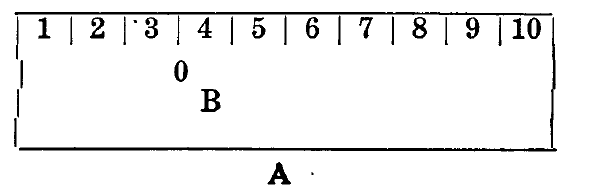

Chapter VI. Price Regulation
The wages paid the workers do not affect the prices of commodities. That is to say that high wages do not make high prices, nor do low wages make low prices. The relation of supply to demand is an important factor in price regulation.
If there are 100 tons of coal on the market and a thousand people each of whom want to buy a ton of coal, the competition between these thousand persons would bring the price of coal up; and if the weather was extremely cold the sellers of coal could charge much more than if the weather was mild. For the need of coal by each of the thousand persons would intensify the competition among them to obtain coal which the cold spell makes an imperative need to them. The value of coal would not have increased but its price would, due to the market conditions prevailing at the time of sale. But if the weather was mild the need of coal would not be so great and those who wanted coal would delay a day or so in the hope that a more favorable condition would then exist—the competition among the buyers would not be quite so keen and prices would not be so high.
If on the other hand there were 1,000 tons of coal on the market and only 100 purchasers the competition would be among the sellers of coal and prices would drop. Again the value of coal would not have altered, but the market condition would have depressed its price.
When prices remain above value for any period of time there is a compensating period, during which price is below value. But taking the fluctuations of price above and below value and on the average, commodities will be found to sell at their value—value and price are on the average equivalents.
As profit is the objective of every capitalist enterprise and can only be realized in exchange, there must be some basis upon which commodities will exchange. That, as we have stated, is on the basis of the necessary social labor time incorporated in them. We found that this labor time consisted of two elements—paid labor time and unpaid labor time.
High Wages Do Not Make High Prices
Let us take the rectangle A to represent the day's working time, dividing it into ten parts to represent the hours of labor and using the pointer B to indicate the three hours which we have assumed is required to produce values equal to the day's wage of the worker.

If the labor power of the worker for one day is equivalent to the social labor time necessary to the production of one commodity, that commodity will exchange for other commodities containing a similar quantity of labor time. But part of that labor time is paid for (3 hours) and part of it is not paid for (7 hours). Now if the laborer's pay is raised from $3.00 to $4.00 per day it will require one more hour, or four hours, of his working time to produce values equivalent to the new wage. That is to say that he is now paid for four hours and the unpaid labor time, being less by one hour, the boss takes one hour less of values. But the commodity still requires ten hours of labor time to produce and on the market will only exchange upon that basis. The boss cannot add to its price because the law of the market forces obedience from him and the holders of other commodities will refuse to trade except in accordance with the law of exchange. There has occurred nothing to change the relationship of the commodity to other commodities. What has occurred is a change in the relationship of its constituent elements to each other—the paid labor time element has been increased and the unpaid labor time element has been diminished. As the boss loses the creative result of one hour of the worker's time it is but natural for him to try to persuade the worker that high wages are a bad thing; that they will make commodities dear. But, if we stop to think about it, the boss would not object to paying high wages except for one thing—they mean smaller profits for him. If he could compensate himself for an increase in wages by charging higher prices he would not fight a wage demand; but it is because he cannot do so that he fights so bitterly against a wage increase. High wages do not make high prices. When the capitalist cries out that they do, what he really means is that they make smaller profits, and that is why he is unalterably opposed to them.
Low Wages Do Not Mean Low Prices
If the wage of the worker is lowered from $3.00 to $2.00 there will not be any fall in prices, for the reason that in this case, as in the other, there is no change in the time necessary to produce the commodity. The worker is now paid for 2 hours and the results of his labor for 8 hours accrues to the boss. The boss would be better off than before and he would still take the commodity to the market and exchange it for a price equal to its value and above it, if he can, and below it when he must. But the wage of the worker has no more to do with price than the mercury in a thermometer has to do with the weather.
If the commodity sells for $10.00 and the worker's wage has been increased from $3.00 to $4.00 the boss makes $1.00 less profit. The article will still sell for $10.00, because the thing that determines its value—labor time—has in nowise altered. But the boss does not like the fall in profits and howls about high prices as though he ever was concerned about anything lower than "all the traffic will bear."
What the boss would like to do, and what he would do if the market would permit him, is to raise the price of the commodity so as to maintain the old rate of profit or even to increase it. As he cannot do so he tries the next best thing—induces the worker to accept a cut in wages and then another while the cutting is good. Witness the open shop drive! Surplus value is the only source of profit. That is the Holy of Holies of the capitalist. He regards any inroads upon surplus value as an act of sacrilege. He fights bitterly and musters every ounce of his power to prevent it.
Increased Demand Temporarily Increases Prices
When a rise in wages takes place the workers have more money with which to purchase commodities. They go into the market to supply their needs first, then their wants. The increased demand thus created tends to temporarily advance the prices of commodities. These commodities, for the time being, sell above their value. The rise in prices appears to be due to the rise in wages, whereas it results from the increased demand arising from the increased purchasing power of the workers. It is not because wages have risen that prices are high, but because the workers are buying more actively. The living standard of the workers rises to higher levels with higher wages. If the new standard obtains over a long time it becomes the established standard. The higher the living standard the costlier labor power and the smaller the profit. Hence the opposition of the capitalist class to high wages.
For some years preceding the war prices were on the rise and wages ruled low. While prices of various commodities, if not of all, had risen considerably it is worth noting that the relationship of commodities to one another remained undisturbed—the rates of price increase were about the same in all of them. Their relationship to gold had changed—it required more gold to exchange with any of them and more gold consequently to express their relationship to one another. The value of gold had fallen. While other commodities exchanged for an increased amount of gold, labor power, on account . of the competition between the laborers, did not as readily command its value, and labor power compared with other commodities was selling below its value—wages were low. Prices rose but wages, except in rare eases, did not rise. High wages were not responsible for these high prices; the decrease in the value of gold was.
What Are "High," "Fair" or "Low" Wages?
We hear the terms of "high wages," "fair wages" and "low wages." What do we understand by them? Things can be regarded as "high," "fair" or "low" only when they are compared with something else. There must be something standard to gauge them by. What is it then that determines a high wage, a fair wage and a low wage? The standard of living prevailing among the workers.
When the wage of a worker enables him to live in a manner superior to the prevailing standard his wages are said to be "high." When his wage enables the worker to approximate the prevailing standard, we say that is a "fair" wage. When, on the other hand, his wages do not enable him to reach the prevailing standard he is receiving a "low" wage. The prevailing (historic) standard of living is the wage denominator.
The wage has three characters: nominal wage, real wage and relative wage. The nominal wage is the price of labor power stated in terms of money, as $2.00, $5.00, or $10.00 per day. The real wage is represented by the commodities that his nominal wage will enable the worker to supply himself with. The relative wage represents the proportion the wage he receives bears to the values he creates. Thus if he creates $10 worth of exchange values for the boss and receives therefor $2 his relative wages is as 2:10.
QUESTIONS
- 1. Do the workers' wages determine the prices of commodities? Explain why.
- 2. What, on the average, is the relation of price to value?
- 3. Can the boss repay himself for an increase in wages by adding the increase to the price of his commodity? Why?
- 4. Will a decrease in wages lower prices? Why?
- 5. How would you account for a temporary rise in prices following a raise in wages?
- 6. What have supply and demand to do with price setting?
- 7. When commodities maintain their relationship to one another but their prices go up, what has happened?
- 8. Is gold the measure of value or the expression of value?
- 9. What are the three aspects of wages?
- 10. When is the wage "high," "fair" or "low"?
- 11. What is the nominal wage?
- 12. What is the real wage?
- 13. What is the relative wage?
Next page: Chapter VII. The Standard of Living